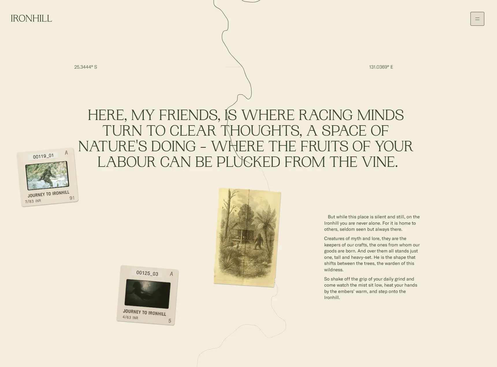

Сайт 011 · Многостраничный · Еда и HoReCa
Ironhill
17 место в чемпионате · 75.2 / 100
Screens/011.webp, доминирующий цвет занимает 91% кадра.Что это
Сайт австралийского фермерского бренда напитков — виски, пиво, вода и продукция хозяйства — сделанный как скролл-сторителлинг на Nuxt 3 с рендерингом целиком на клиенте. Графика — травюры XIX века, плёночные кадры и оборванные бумажные карточки на кремовом фоне, а повествование разворачивается по скроллу через three.js-сцены, GSAP ScrollTrigger и самописный инерционный скролл. Всего восемь страниц, контент захардкожен в компонентах, магазина и CMS нет.
Описание владельца коллекции: Увлекательный сайт австралийского бренда алкогольных напитков. Хорошие иллюстрации и сторителлинг по скроллу.
Чем интересен
- Сайт рендерится целиком на клиенте: сервер отдаёт одинаковый каркас для всех восьми маршрутов, поэтому у внутренних страниц тот же заголовок и те же og-теги, что у главной, а og:url везде указывает на корень.
- Сторителлинг собран на самописной связке, а не на готовой библиотеке: инерционный скролл — ручной цикл с лерпом и перекосом по skewY, высота страницы тоже вычисляется в JS, каждая «запертая» секция добавляет 1350 пикселей прокрутки.
- WebGL-плоскости привязаны к вёрстке: экранные координаты DOM-элемента разворачиваются в мировые, меш подгоняется под его пиксельный бокс, а смену картинок делает собственный шейдер смещения.
- На главной нет тега h1 — видимый крупный заголовок собран из span'ов; на продуктовых страницах h1 есть, но скрыт от глаз и оставлен для скринридеров.
- Нет ни возрастного подтверждения, ни предупреждения о вреде алкоголя — для бренда крепких напитков это заметное упущение; в коде нет ни одного упоминания возраста или проверки.
- В продакшене отдаются шрифтовые файлы с пометкой Trial (GT America Trial), что видно прямо в именах файлов и в объявлениях @font-face.
- Скриншот 011.webp снят с более ранней сборки: текст с него не встречается ни в одном файле текущей версии, хотя палитра и типографика совпадают.
Все 30 номинаций сайта
Итог: 75.2 / 100 по профилю «Промо, культура, иммерсив». Первых мест в критериях: 2 (единолично 0, разделено 2), призовых мест: 2. Строки отсортированы по месту в номинации, ссылка ведёт к номинации в чемпионате.
- Соответствие бренду и ЦА
- Безопасность
- Эстетика и оригинальность
- Уникальность предложения
- Современные технологии
- Инновационность в дизайне
- Мультимедийность
- Стабильность
- Креативность в решении задач
- Грамотность
- Социальная ответственность
- Доступность (a11y)
- Интерактивные элементы
- Интуитивность навигации
- Соответствие заявленному
- Читабельность
- Отзывы и рейтинги
- Работа форм и поиска
- Прозрачность
- Целостность
- Попадание в номинацию
- Удобство интерфейса
- Релевантность и полнота
- Полнота реализации
- Уникальность и экспертность
- Экспертность
- Адаптивность
- Интеграции
- SEO-оптимизация
- Актуальность
Обоснования по разделам
- Юзабилити и UX
- Меню-оверлей, курсор-точка и предзагрузчик работают на впечатление, но контент появляется только после загрузки мегабайта JS, а на главной нет даже h1 — крупный заголовок собран из служебных span'ов.
- Дизайн и визуальное восприятие
- Плотная «бумажная» стилистика: кремовый фон, оливковая типографика, травюры, плёночные кадры и оборванные карточки под углами, одна жёлтая точка акцента.
- Контент
- История бренда, девять карточек продукции, раздел про хозяйство и меню-оверлей; магазина, точек продаж и страницы контактов нет, а возрастного предупреждения для алкогольного бренда нет вовсе.
- Техническое качество
- Сервер отдаёт один и тот же каркас на все восемь маршрутов: заголовки и og-теги внутренних страниц не отличаются от главной, sitemap отсутствует, при этом 14 проверенных ссылок живы и robots разрешает обход.
- Функциональность и интерактивность
- Форма подписки через Formspree, аналитика, интерактивные 3D-карточки с клавиатурным управлением; поиска, фильтров и корзины нет.
- Доверие и репутация
- Два юридических документа с адресом и применимым правом, но без номера лицензии и ABN; в политике указан другой домен, чем живой.
- Инновации и технологичность
- three.js со собственным шейдером смещения, привязка WebGL-плоскостей к вёрстке через обратную проекцию координат и самописный инерционный скролл вместо библиотеки.
- Соответствие категории и целям
- Для бренда напитков сторителлинг сделан образцово, но практическая часть — где купить и как связаться — отсутствует.
Что не проверено
- Браузер не запускался: сайт рендерится только на клиенте и требует около 1 МБ JS, поэтому секции, шрифты и цвета выведены из исходников, а не из computed-стилей.
- Текст со скриншота 011.webp не найден ни в одном файле текущей сборки — похоже, снимок сделан с более ранней версии того же дизайна; точная дата сборки не установлена.
- Внешние ссылки на Instagram, LinkedIn и сайт студии проверить не удалось: из среды проверки эти домены недоступны. Это ограничение, а не подтверждение битых ссылок.
- Возрастной гейт отсутствует в коде, но визуально его поведение при реальном заходе не проверялось.
- Наличие CMS отрицать нельзя: обращений к ней в бандлах нет, весь текст лежит в компонентах, но иные пути подгрузки контента не исключены.
- Юридический статус шрифтовых файлов с пометкой Trial не оценивался — зафиксирован только факт, что они отдаются продакшеном.
- Обработка prefers-reduced-motion не найдена ни в CSS, ни в JS: это результат поиска по исходникам, а не проверка поведения при включённой системной настройке.
- Настройки кэширования и реальный провайдер CDN не проверялись; DigitalOcean известен только со слов политики конфиденциальности.
Паспорт
- Домен
- ironhill.au
- Тип сайта
- Многостраничный
- Категории
- Еда и HoReCa
- Подкатегории
- Крепкий алкоголь
- Для кого
- Дизайнерам, Маркетологам, Ритейлу
- Стиль
- Редакционный, Коллаж и иллюстрация, Ретро
- Приёмы
- Скроллителлинг, Липкие секции, WebGL и 3D, Кастомный курсор, Прелоадер, Переходы между страницами, Рисованная графика
- Технологии
- Nuxt 3 (Vue 3, Vite), Рендеринг только на клиенте, three.js, Собственный GLSL-шейдер перехода, GSAP 3.13.0 + ScrollTrigger + ScrollToPlugin, Самописный инерционный скролл, Рисованная SVG-линия, PP Woodland и GT America, Formspree, nginx 1.26.0 на Ubuntu, Google Analytics 4
- Язык
- Английский
- Страна
- Австралия, Виктория — адрес в юридических документах: 17 Moray St, South Melbourne VIC 3205
- Автор
- студия Uncommon — в подвале ссылка «Site by Uncommon»
- Год
- 2025
- Добавлен
- 2026-09-30
Палитра
- #F4EDDD — 91% кадра
- #DED4B3 — 3% кадра
- #877E5D — 2% кадра
- #B8B294 — 1% кадра
- #3E412E — 1% кадра
измерено из Screens/011.webp (кремовый фон занимает 91% кадра); токены сайта: тёмно-оливковый #344128 для текста и жёлтый акцент #FEC820
- Режим
- Светлая
- Цвет фона
- Нейтральный
Чемпионат
17 место из 31 · 75.2 / 100 · первых мест 2 из 30 · сильнее всего: Соответствие бренду и ЦА (1 место)
- Соответствие бренду и ЦА — 1 место, 9 баллов
- Безопасность — 1 место, 8 баллов
Технические факты
- HTTPS
- да
- Meta viewport
- да
- Title
- Ironhill | A place the maps don't show (38 симв.)
- Description
- Shake off the grip of your daily grind and come watch the mist sit low, heat your hands by the embers' warm, and step onto the Ironhill. (136 симв.)
- Open Graph
- да
- Структурированные данные
- нет
- Sitemap
- нет: /sitemap.xml и /sitemap_index.xml отдают 404
- Robots
- есть: User-Agent: * / Disallow: — разрешено всё, ссылки на sitemap нет
- Аналитика
- Google Analytics 4 (G-NVZ1XE0RTK), Mailchimp назван в политике как рассыльщик, скрипта на странице нет
- Проверено ссылок
- 14
- Битые ссылки
- нет
- Контакты
- почты и телефона в подвале нет; адрес и почта есть только в юридических документах, подписка на новости отправляется через Formspree
- Юридическая информация
- ©2025 Ironhill; Privacy Policy и Terms of Service от 11 ноября 2025, применимое право — Виктория; в политике сайт назван www.ironhill.com.au, хотя домен ironhill.au — расхождение; номера ABN и лицензии нет
Технологии с доказательствами
- Nuxt 3 (Vue 3, Vite) — div#__nuxt, ассеты /_nuxt/, data-nuxt-data с data-ssr="false", window.__NUXT__.config.buildId, scoped-стили data-v-*
- Рендеринг только на клиенте — data-ssr="false"; сервер отдаёт один и тот же каркас 2559 байт для всех восьми маршрутов, содержимое появляется после загрузки 1 МБ JS
- three.js — в основном бандле THREE (180 совпадений), WebGLRenderer, ShaderMaterial, GLTFLoader, PerspectiveCamera, PlaneGeometry
- Собственный GLSL-шейдер перехода — инлайновый фрагментный шейдер с uniform time/progress/texture1/texture2/displacement и картой /3d/displacement.jpg — растворение одной картинки в другую по прогрессу скролла
- GSAP 3.13.0 + ScrollTrigger + ScrollToPlugin — баннер лицензии GSAP 3.13.0 в бандле, ScrollTrigger.create({… scrub: 1}), динамический импорт ScrollToPlugin в чанке /produce/
- Самописный инерционный скролл — rAF-цикл с window.easingBase и формулой y = k*(scrollY - y) + y, затем gsap.set с y и skewY как «резинкой»; Lenis и ScrollSmoother не используются
- Рисованная SVG-линия — инлайновый svg viewBox="0 0 734 10083" с одним длинным путём и анимацией stroke-dashoffset
- PP Woodland и GT America — @font-face в entry.css, файлы отдаются из /fonts/*.woff2; два файла помечены как Trial-версии GT America
- Formspree — форма подписки отправляет данные на formspree.io/f/mblnappy (POST → 302)
- nginx 1.26.0 на Ubuntu — заголовок Server: nginx/1.26.0 (Ubuntu); хостинг DigitalOcean назван в политике конфиденциальности
- Google Analytics 4 — gtag.js с идентификатором G-NVZ1XE0RTK и send_page_view: false для ручных переходов
Что смотреть в первую очередь
Смотреть как пример скролл-сторителлинга: фиксированный слой поверх искусственно удлинённой страницы, травюры и плёночные кадры на кремовой бумаге, оливковая типографика и один жёлтый акцент.
Похожие в коллекции
- Prand — общее: Коллаж и иллюстрация, Прелоадер, Скроллителлинг, Липкие секции, WebGL и 3D, Рисованная графика
- Sutéra — общее: Редакционный, WebGL и 3D, Скроллителлинг, Кастомный курсор, Прелоадер
- Nothin' — общее: Редакционный, WebGL и 3D, Кастомный курсор, Переходы между страницами, Липкие секции
- Leo Parpeix — общее: Редакционный, WebGL и 3D, Кастомный курсор, Скроллителлинг, Прелоадер